다음팟 인코더로 플짤 만들기!!!
일단  요렇게 생긴 프로그램을 실행시킵니다.
요렇게 생긴 프로그램을 실행시킵니다.
요렇게 생긴 프로그램을 실행시킵니다.
위에 '동영상 편집' 을 눌러주시면 이렇게 창이 뜨는데 불러오기로 작업할 영상파일을 불러와주세요.
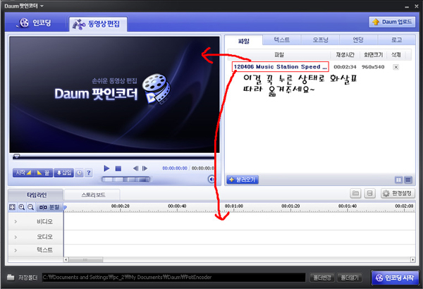
불러왔으면 그림 지시대로 따라주세요. 둘다 해야되요!
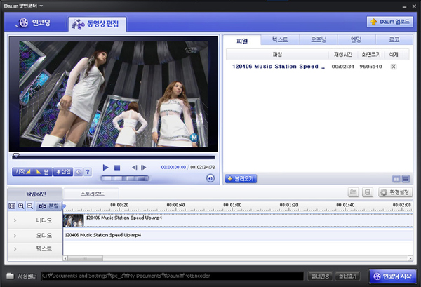
그럼 이렇게 될껍니다 왼쪽 하단에 분할이 보이시죠? 필요 없는 구간은 분할로 잘라주시고
그 구간을 마우스 오른쪽 버튼을 눌러 삭제버튼을 눌러주시면 됩니다.
그리고 오른쪽 하단에 환경설정이 있는데 그걸 눌러주세요.
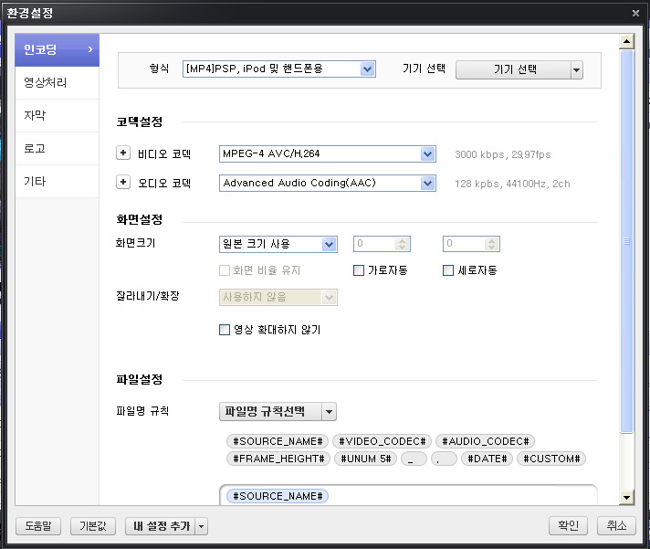
그럼 이렇게 뜨는데 형식, 비디오 코덱, 오디오 코덱을 저렇게 설정해주세요.
크기는 자신이 원하시는 크기로 하세용ㅎㅎ사용자 설정을 해서 직접 크기를 설정할 수 있답니다
저는 크기를 냅두기 위해서 원본크기를 사용하겠습니다.
잠시 의문을 드실께 왜 굳이 코덱을 저렇게 하고 형식을 mp4로 하느냐!
비디오 코덱에서는 저게 화질이 제일 좋습니다.
그리고 오디오 코덱은 aac가 제일 음질이 좋고 ac3로 할경우 플짤 만들고 업로드시 안들리는 현상이 발생합니다.
고로 저렇게 수정해둡니다.
그리고 비디오 코덱 옆에 + 모양을 눌러주세요~.
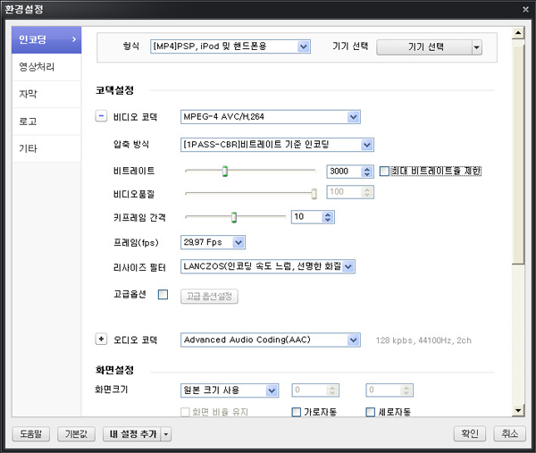
이렇게 뜨는데 압축형식과 리사이즈 필터를 저렇게 바꿔주세요.
나머지는 자유입니다.
참고로 말씀드리자면 화질을 결정하는데 비트레이트가 한몫합니다.
근데 일정 비트레이트가 올라가면 더이상 화질은 안올라가고 용량만 늘어나죠.
그래서 그 적절선이 최대 비트레이트입니다. 구하는 공식이 있습니다.
<영상가로크기 * 영상세로크기 * 프레임(fps) * 0.27 / 1024> 입니다.
예를 들면 960*540인 영상에 프레임 29.97의 최대 비트레이트는 약 4096이 나옵니다.
그렇다고 저렇게 딱 마추시면 안되고 100~500정도 낮추시는게 좋습니다.
저건 순수 영상의 비트레이트니까요 소리에도 비트레이트가 있어서 소리도 들어가면 최대 비트레이트를 넘겨버리는 현상이 일어납니다.
아 한가지 알려줄게 있는데요!
공유자료에서 받은 영상에 상하좌우에 검은 부분이 있는데 난 그런게 싫다! 하시는 분들
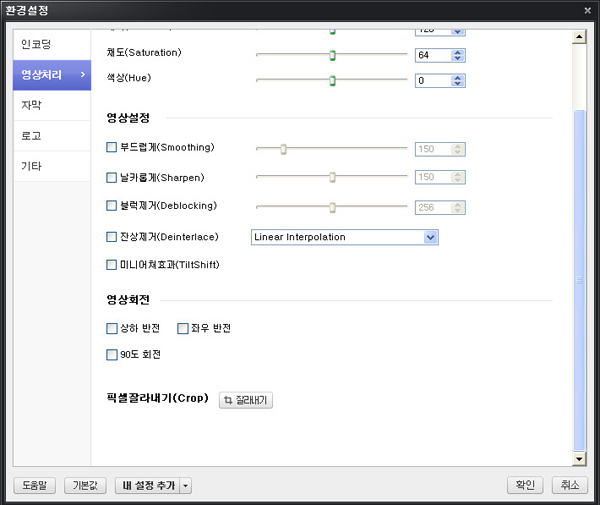
환경설정에서(아까 켰던거!!) 왼쪽에 '영상처리'를 누르시고 밑으로 내리시면 픽셀잘라내기가 있습니다.
그걸 누르시면 상하좌우로 잘라내실 수 있습니다.
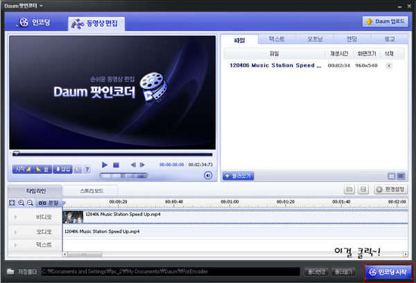
다 되었으으면 이제 인코딩을 시작!!!....하기 전에 경로를 바꿔야 됩니다.
인코딩한 파일 찾아내기 귀찮으시다면 말이죠.
맨 밑에 저장폴더 있는데 확인할 수 있는 경로로 지정해둔 다음에 인코딩을 합시다~!
시간이 길수록 인코딩 시간이 기므로 그 시간동안 다른걸 하고 있으면 인코딩이 끝나 있을겁니다.
이제 인코딩 한걸 분할하기 위해 이걸 켜줍니다.

그리고 지시대로 해줍니다.
왜 10Mb로 마추느냐? 티스토리 용량제한이 10Mb입니다.
이제 분할된 파일들이 있을텐데 하나도 빼먹지 말고 빈 폴더를 만들어서 넣어줍니다.
그리고 요걸 켜줍니다.
없으신 분들은 강좌 마지막 부분에 링크 걸어드립니다.
걱정 마시구요~ 일단 이걸 키면~
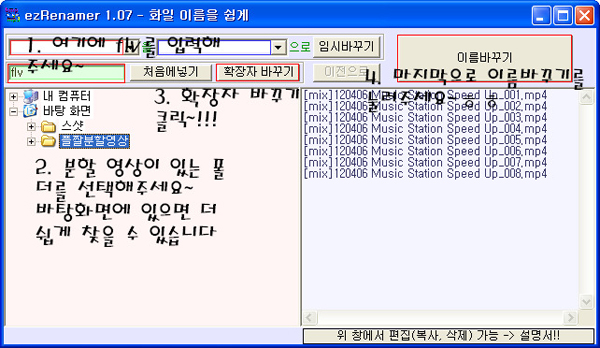
이렇게 됬는데 저 그림의 지시대로 따라주세요.
그러면 분할된 영상들 확장자가 flv로 체인지 되어있을 겁니다.
왜 굳이 flv로 바꿔야 되냐면 티스토리의 사이트 특성상 mp4가 잘리는 경우가 생깁니다.
그래서 잘릴 위험 없는 flv 확장자를 사용합니다.
자 이제 티스토리에 업로드를 해줍니다.
참고로!! 최근 티스토리 에디터가 바뀌어서 플짤 업로드가 안되는 에디터로 바꿧더라구요.
일단 글쓰기 버튼을 누르시고 위쪽에 이전 에디터 사용하기를 눌러주세요.
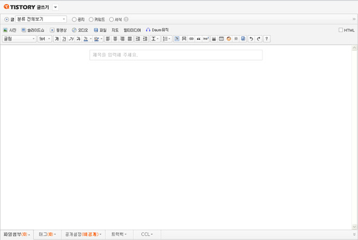
이것이 플짤 업로드 전용 에디터입니다.
저기 보이시는 '파일' 버튼을 누르셔서 아까 flv로 바꾼 분할영상파일들을 업로드합니다.
10Mb이하만 업로드 가능하니 10Mb이하인지 체크하셔서 업로드 해주세요.
업로드를 하셨으면 '저장하기' 를 누르시지 마시구!!! 오른쪽 상단에 html이 있고 상자가 있는데 체크해주세요.
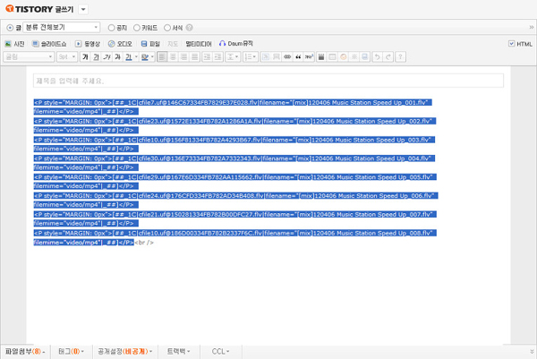
체크하시면 영어와 숫자가 쏼라쏼라 할텐데 <br/>를 제외하고 모드 드레그 해주시고 복사~!
<br/>는 띄어쓰기라 필요 없어용!!!
복사하셨으면 저장을 눌러주시고~! 를 켜주세요.
이것도 마지막 부분에 올려드리겠습니다.
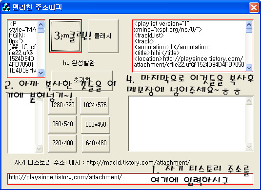
켜시면 이렇게 나와있을텐데 지시대로 따라주세요.
다 하셨으면 메모장에 영어 쏼라쏼라 하는게 남아있을텐데 '<image />'가 있을껍니다.
그것들을 전부 없애주세요. 치환기능을 이용하면 한번 클릭으로 전부 지울수 있습니다.
로딩짤이 있으시다! 하시는 분들은
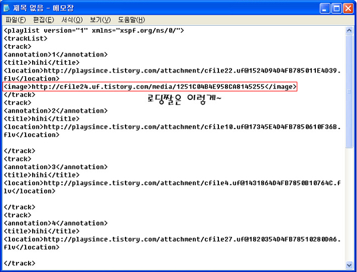
이렇게 해주시면 됩니다. 그리고 저장!!!
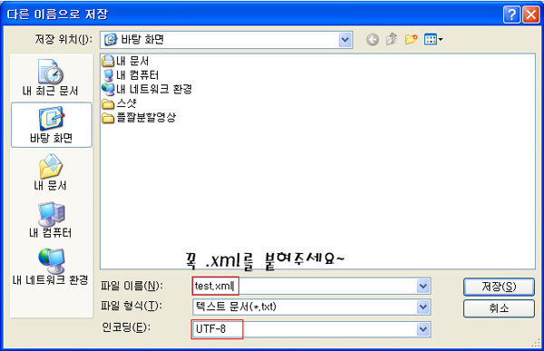
이렇게 저장하세요!!! 플짤은 flv, xml 외 2개밖에 인식을 못합니다.
특히! 이렇게 분할하고 모아서 만든 플짤은 특히나...
아참! 한글로 적으시면 안됩니다. 인식이 안되더라구요.
이렇게 완성된 xml 파일을 올려야 겠죠. 다시 티스토리로~
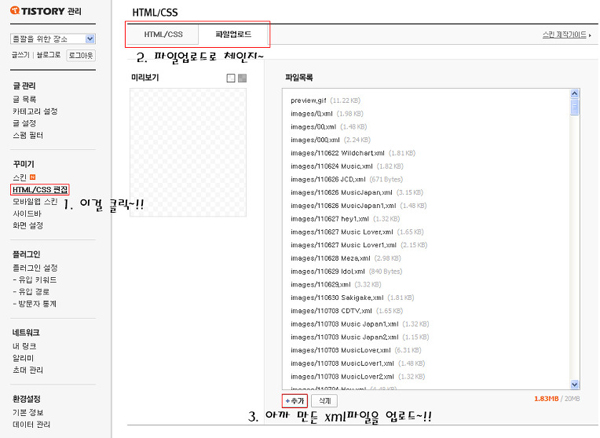
아까 티스토리에서 글을 저장하면 글목록이라고 해서 뜰텐데 윗 사진의 지시대로 해주세요.
자 이제 jw플레이어가 필요합니다!!!
그게 뭐냐구요?? 플짤의 틀이라고 생각하시면 편하겠군요.
누르시면 압축파일이 있으실겁니다. 그걸 받아서 봉인해제!!!
그리고 아까 xml파일 올렸던걸 똑같이 올려줍니다.
그리고 제 티스토리는 xml파일이 잔뜩있는데 처음 하시는 분들은 생소한 파일들이 많이 있을겁니다.
그냥 아무거나 하나 집어서 마우스 오른쪽 버튼을 누르시어 속성 클릭!!!
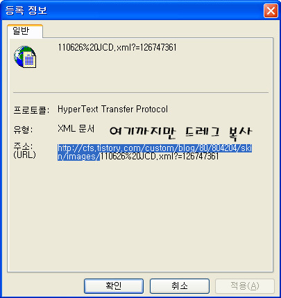
지시대로 해주시구 메모장에 키셔서 복사하신후 아까 알집 받은거 푸셔서 올리셨죠?
아마도 이름을 안바꾸셨다면 '51.swf' 일텐데 / 뒤에 입력해주세요.
그러면 이제 jw플레이어 주소가 완성됬습니다.
저장해두시고 쓰세요.
이제 플짤을 사이트에 올려야 겠죠?
제가 쓰는 플짤 html 주소를 올려보겠습니다.
<embed src=jw플레이어 주소 width=너비 height=높이
type="application/x-shockwave-flash" allowfullscreen="true"
flashvars="file=파일주소&
controlbar=none&
logo.file=http://cfs.tistory.com/custom/blog/80/804204/skin/images/everkara.png&
logo.position=bottom-right&
logo.hide=false&
logo.link=http://everkara.com&repeat=always&stretching=exactfit&
icons=false&
quality=high&
autostart=true">
이렇게 되어있죠.
진한 부분은 아까 jw플레이어 만드신거 있죠? 그거 넣으시면 됩니다.
그리고 파일주소는 말이죠 아까 만든 xml파일 있죠?
예를 들면 'test.xml' 이다!! 하시면 아까 만든 jw플레이어있죠?
거기에 swf 넣으신거 빼시고 주소 넣으시면 됩니다.
예를 들면 http://cfs.tistory.com/custom/blog/80/804204/skin/images/test.xml 이렇게 말이죠.
더 자세한건 여기에 나와있습니다. http://gall.dcinside.com/list.php?id=flash&no=131643
일단 저 주소를 해석해드리자면
controlbar=none : jw플레이어 컨트롤바 안보이게
logo.hide=false : 로고 사라짐 안되게
logo.link=http://everkara.com : 로고 누르면 에버카라 이동(에버카라 주소니까요)
logo.position=bottom-right : 로고 위치 오른쪽 아래로
logo.file=http://cfs.tistory.com/custom/blog/80/804204/skin/images/everkara.png : 로고 그림 불러내는 주소(꼭 png로 하셔야 읽힙니다)
repeat=always : 항상 리플레이
stretching=exactfit : 화면 영상 딱 맞춤
icons=false : 재생 아이콘 안보이게(▶ 이거요)
autostart=true : 자동재생
quality=high : 이거는 그냥 넣은거... 그냥 빼도 좋습니다. 화질 좀더 높여주기? 큰 차이는 없습니다.
그리고 중간중간에 '&'이 있는데 이게 없으면 인식을 못하므로 꼭 넣어줍시다.
물론 xml파일 주소 넣은 다음 명령어부터 '&' 넣으셔야 됩니다 'ㅅ'
자 이제 대충 끼어넣으셨으면 html버튼 누르고 주소를 붙혀넣기 후 다시 html버튼을 누르시면!